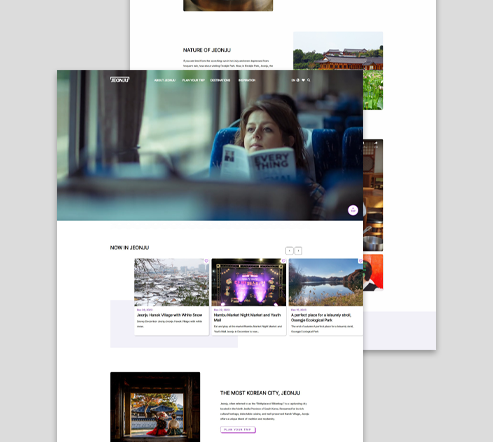

PERSONAL PROJECT
비짓전주 웹사이트 리뉴얼
- 반응형 디자인
- HTML5
- CSS3
- Javascript
- jQuery
전주시 관광홍보 웹사이트 비짓전주(tour.jeonju.go.kr)를 리뉴얼하는 가상 프로젝트입니다. 전주 여행에 관심 있는 외국인을 대상으로 하고 흥미를 느낄 만한 주제를 선정하여 메인페이지에 배치하였습니다.
더 알아보기